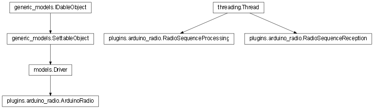

plugins.arduino_radio¶

API¶
- class plugins.arduino_radio.RadioSequenceReception(driver, serial)¶
Bases: threading.Thread
Subclass of threading.Thread. It is the thread used to poll the Serial interface in order to detext whether or not an incoming message has arrived. If a new message is available, it is added to the driver’s buffer to be subsequently sent to all the driver’s observers by the RadioSequenceProcessing thread.
- run()¶
Function called when the thread is launched.
- stop()¶
Function called to stop the thread.
- class plugins.arduino_radio.RadioSequenceProcessing(driver)¶
Bases: threading.Thread
Subclass of threading.Thread. It is the thread that waits for incoming radio messages in the buffer and processes them one after the other.
- run()¶
Function called when the thread is launched.
- stop()¶
Function called to stop the thread.
- class plugins.arduino_radio.ArduinoRadio¶
Bases: models.Driver
Driver class implementing the interface between the computer running Majordom and the Arduino, which is used as a 433MHz radio modem.
- set(settings)¶
Overrides the same method of the :class`SettableObject` in order to dynamically manage the ‘com_port’ field of the settings that is specific to Drivers.
- initialize_radio_reception()¶
Sets the serial communication used by the domotic box to communicate with the Arduino. If the given COM port number is not valid (i.e. it raises a SerialException when we try to open the connection) the method raises the same serial.SerialException.
- bind(protocol)¶
Adds the protocol object given as argument to the list of protocols that receive their messages through this modem. When the modem receives a radio sequence, it will send it to the whole list of its observers.
- unbind(protocol)¶
- notify_protocols(message)¶
(Internal) Notifies all the protocols that are observing this modem that an incoming radio message has arrived. The received sequence is given as argument so that each protocol can handle the decoding.
- format_arg(binary)¶
(Internal) Formats a binary sequence so that it fits the format of the parameters of a command sent to the Arduino. This method is called by the send_sequence method.
- send_message(message)¶
Sends the radio message given as an argument.
The message dictionary must have the following format :
Key Type number_of_repetitions int base_radio_pulse_length_in_microseconds int symbol_1 binary_string symbol_2 binary_string ... binary_string symbol_n binary_string symbol_coded_message symbols_list
- plugins.arduino_radio.driver_class¶
alias of ArduinoRadio